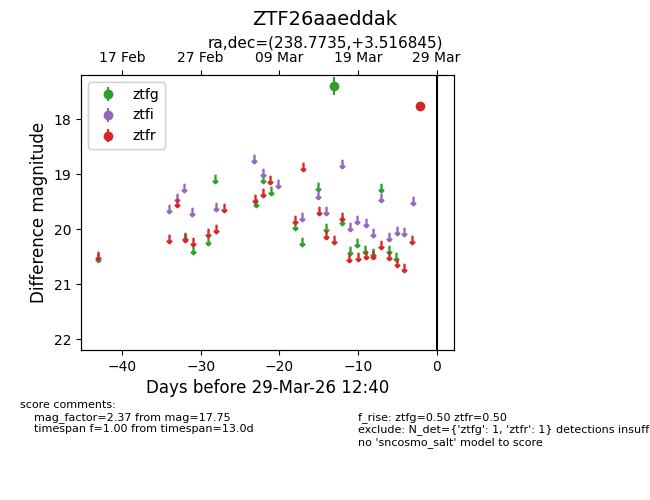
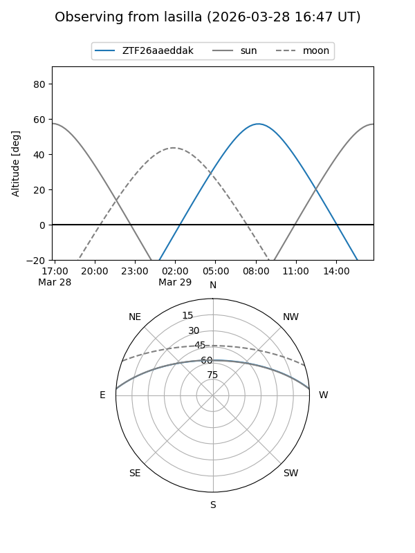
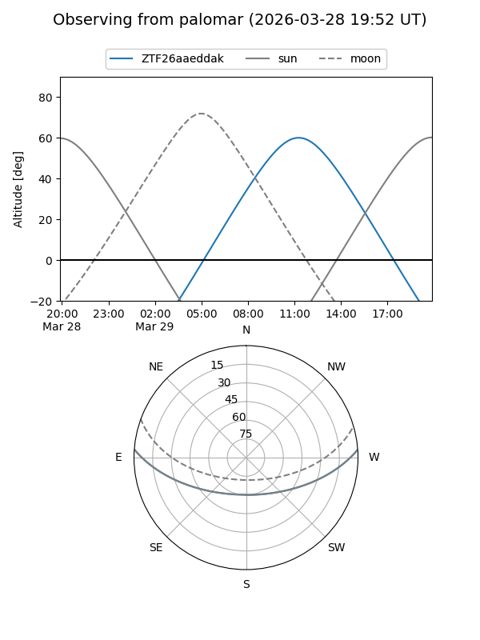

ZTF26aaeddak
Target ZTF26aaeddak at 2026-03-29 12:43
Aliases and brokers:
FINK: link
Lasair: link
ALeRCE: link
alt names
ZTF26aaeddak (ztf,fink_ztf)
Coordinates:
equatorial (ra, dec) = 238.7735,+3.51684
equatorial (HMS+DMS) = 15:55:05.65,+03:31:00.64
galactic (l, b) = (12.8538,+40.24086)
Flags:
Photometry:
last ztfg=17.39, ztfr=17.75
1 ztfg, 1 ztfr detections
Lightcurve

Visibility


Additional plots